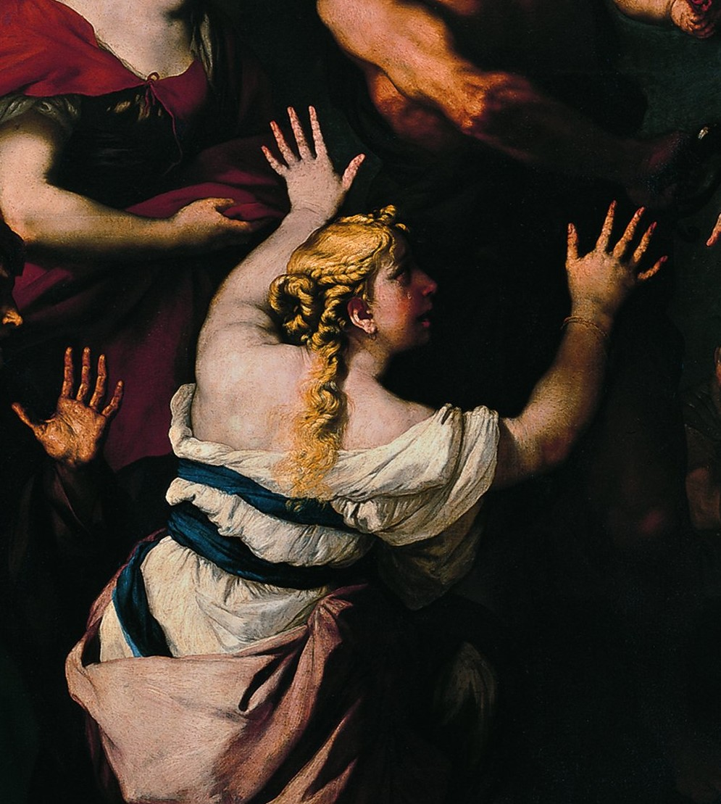
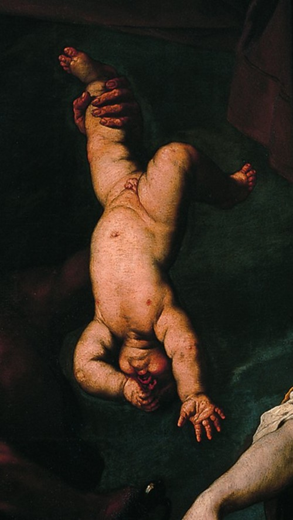
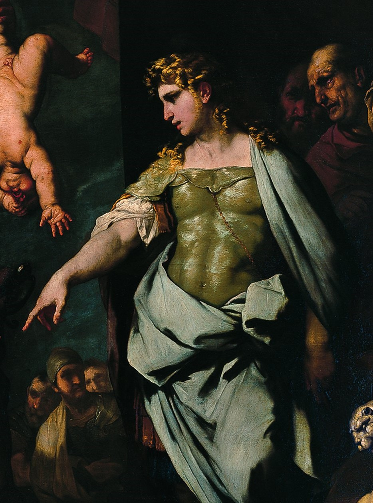
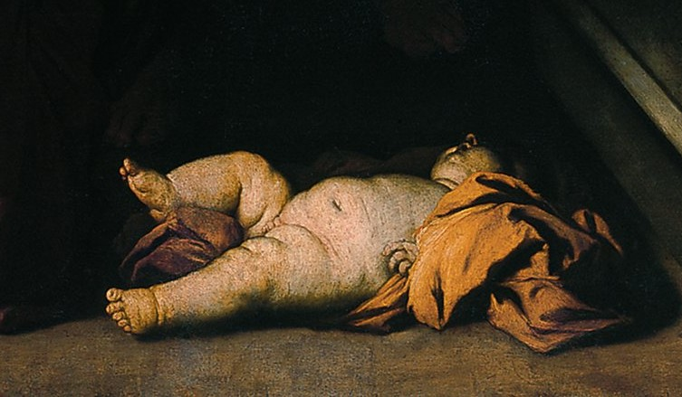

El juicio de Salomón cuenta la historia de dos mujeres que recurren al rey Salomón debido a que tienen una disputa: ambas argumentan ser madres de un niño con pocos días de nacido. Tras escuchar los puntos de vista, el rey indica a un guardia que traiga una espada y corte al niño a la mitad, de esta forma, ambas madres recibirán una parte del bebé. Cuando la primera mujer escucha esto, empieza a llorar y le suplica desconsoladamente que por favor le entregue el bebé a la otra mujer, a cambio de que no lo corte. En respuesta, el rey le indica al guardia que le devuelva el bebé a la primera mujer, la verdadera madre.

En la obra, podemos observar a la verdadera madre arrodillada en el centro de la pintura. Podemos notar su sufrimiento. Pareciera que estuviese en movimiento. Sus ojos están llenos de lágrimas y su expresión grita misericordia. Incluso en su vestimenta, con un desorden desesperado, podemos ver una señal más que muestra la maestría de Giordano en la pintura. Otro elemento precioso son sus manos: abiertas, pidiendo el fin del mundo a cambio de la vida de su primogénito.
La abnegación más profunda: el amor maternal.

La iluminación de la obra está uniformemente repartida, aunque se centra adicionalmente en un triángulo fácilmente observable. Uno de los extremos del triángulo lo conforma la verdadera madre. Otro de los puntos de la figura es el bebé, que, aunque inconsciente y poco participativo, es el centro de la historia, el meollo de la disputa, las lágrimas de la madre, la decisión del rey. De cabeza, con un pie coleando y el otro sostenido por un guardia que envaina nuevamente su espada, el bebé no puede hacer nada, más que confiar en la sabiduría del rey y en el lenguaje de su madre.
El bebé no puede hacer nada, más que confiar en la sabiduría del rey y en el lenguaje de su madre.

El último elemento de este triángulo está representado por el rey Salomón, tan sereno, sabio, prudente y bohemio. Exalta la sabiduría y la justicia que caracteriza el poder político legítimo. Su cuerpo y sus brazos generan movimientos pacíficos y deliberados, muy bien pensados, grandes ejemplos comunicativos. Todos —y todo— lo que está alrededor del rey expresa confianza y esperanza en el monarca.
El rey Salomón, tan sereno, sabio, prudente y bohemio.

Fuera de este triángulo de personajes, el autor incorpora detalles significativos que dotan la obra de complejidad y personalidad. Uno de estos elementos puede ser el bebé que aparece muerto en la parte inferior de la pintura. El recién nacido era hijo de la segunda mujer. En aquella época sería su única esperanza de tener una vida autónoma. En la antigüedad la ley del levirato aún imperaba, esta norma condiciona a las mujeres viudas sin hijos a casarse con el hermano de su difunto esposo.
El bebé muerto en la obra no es un detalle más que adorna la pintura, es un elemento lleno de significado que explica profundamente parte de la causalidad de la situación.
En definitiva, la pintura es una escena llena de fuerza, emocionalidad, belleza y significado. Es también un cuadro más en los pasillos del maravilloso Thyssen, pero absolutamente una experiencia histórica que se debe vivir. El juicio de Salomón ha fascinado a las personas durante siglos. Tiene conexiones profundas con la sabiduría, la justicia y la compasión, y su mensaje sigue siendo relevante hoy en día. Giordano representa vívidamente la historia y nos recuerda que, en manos de poder legítimo, la justicia siempre triunfa sobre la injusticia.